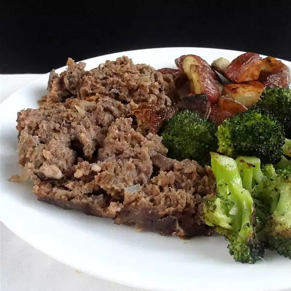

The Best Salmon Recipe In Town
Try our one of a kind homemade Salmon recipe guarantee to keep you in the kitchen
This Salmon recipe is one our best homemade that will keep you thinking about the next family dinner made from some
of the best fresh products from cilantro leaves, honey, garlic etc followed with step by step instructions on how to get the best results when cooking.
Ingredients
- 1 bunch cilantro leaves, chopped
- 2 cloves garlic, chopped
- 2 cups honey
- juice from one lime
- 4 salmon steaks
- salt and pepper to taste
Steps
- In a small saucepan over medium-low heat, stir together cilantro, garlic, honey, and lime juice.
Heat until the honey is easily stirred, about 5 minutes. Remove from heat, and let cool slightly.
- Place salmon steaks in a baking dish, and season with salt and pepper. Pour marinade over salmon, cover, and refrigerate 10 minutes.
- Preheat an outdoor grill for high heat.
- Lightly oil grill grate. Place salmon steaks on grill, cook 5 minutes on each side, or until fish is easily flaked with a fork.
The World's Famous One Of a Kind Mushroom Meatloaf Recipe

This is our special Mushroom Meatloaf recipe
Next up we got our special one of a kind Mushroom Meatloaf recipe that can't be matched made from ground beef, mushrooms,
fresh bread crumbs, minced onion, ketchup, eggs etc also followed with detailed instructions to get that
finishing touch down to perfection for an unforgettable family dinner.
Ingredients
- 2 pounds lean ground beef
- 1/2 pound fresh mushrooms, all minced except for 6
- 3/4 cup fresh bread crumbs
- 1/2 cup minced onion
- 1/2 cup ketchup
- 2 eggs, beaten
- 1 1/2 teaspoons salt
- 1/2 teaspoon ground black pepper
Steps
- Preheat oven to 350 degrees F(175 degrees C).
- In a large mixing bowl, combine ground meat, minced mushrooms, bread crumbs, onion, ketchup, eggs,
salt and pepper. Mix well. Spread 1/2 of the mixture into the bottom of a loaf pan. Arrange 6 whole mushrooms stem
down into meat. Top with rest of meat, patting to combine both halves.
- Bake for 1 hour and 45 minutes, or until done. Internal temperature should measure 160 degrees F(70 degrees C) when done.